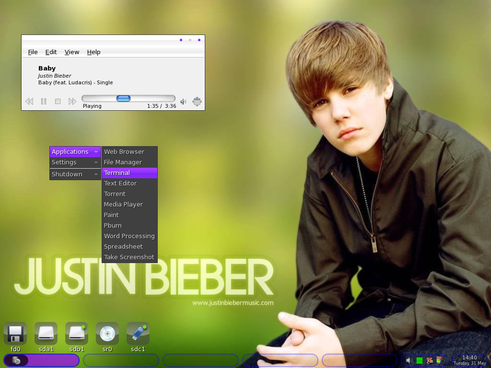

Техническая информация
Отзывы
Любитель линукса:
Лучший дистрибутив в мире
Любитель линукса:
Лучший дистрибутив в мире
Любитель линукса:
Лучший дистрибутив в мире
Любитель линукса:
Лучший дистрибутив в мире
Лучший дистрибутив в мире
Лучший дистрибутив в мире
Лучший дистрибутив в мире
Лучший дистрибутив в мире
Основа: Ядро Linux (версия, выбранная случайным образом).
Рабочее окружение: BiebUI (основано на слегка измененном KDE Plasma).
Установленные приложения:
Justin Bieber Music Player (JBMP): Проигрыватель всех хитов Джастина Бибера.
SelfieCam: Приложение для мгновенных селфи с фильтрами в стиле Бибера.
Belieber Browser: Браузер, который автоматически перенаправляет на сайты, посвященные Биберу.
#NeverSayNever Terminal: Терминал, где каждая команда начинается с `#NeverSayNever`.
Требования к оборудованию:
Процессор: Intel Core i5 или аналогичный AMD.
Оперативная память: 8 ГБ (желательно 16 ГБ для плавной работы JBMP).
Место на диске: 32 ГБ (100 ГБ для хранения всех альбомов Бибера).
Видеокарта: NVIDIA GeForce GTX 960 или аналогичная AMD (для поддержки BiebUI).
Микрофон и веб-камера: Обязательны для работы SelfieCam.
Доступ к интернету: Необходим для загрузки обоев с Джастином Бибером.
Руководство по установке (пародийное)
1. Загрузка "ISO-образа":
Купите на нашем сайте.
Загрузите файл `bieberos-latest.iso`.
2. Создание загрузочной флешки:
Используйте программу Rufus.
Выберите загруженный ISO-образ.
Выберите флешку (минимум 8 ГБ).
Нажмите "Старт".
3. Загрузка с флешки:
Перезагрузите компьютер.
Во время загрузки нажмите клавишу Delete, F2, F12 (зависит от производителя).
В BIOS/UEFI выберите загрузку с флешки.
4. Начало установки:
Появится заставка с Джастином Бибером.
Выберите язык установки.
Примите лицензионное соглашение (в котором говорится, что вы обязуетесь слушать песни Бибера круглосуточно).
5. Разметка диска:
ВНИМАНИЕ! Этот шаг может привести к потере данных! Сделайте резервную копию важных файлов!
Выберите "Автоматическая разметка".
Нажмите "Далее".
6. Настройка пользователя:
Придумайте имя пользователя: Belieber1, BieberFan и т.д.
Придумайте пароль: #NeverSayNever123.
7. Ожидание:
Установка BieberOS займет около часа.
Во время установки JBMP будет играть все хиты Джастина Бибера.
8. Перезагрузка:
После завершения установки компьютер перезагрузится.
9. Настройка BieberOS:
Настройте свой профиль Belieber.
Выберите любимые обои с Джастином Бибером.
Наслаждайтесь BieberOS!